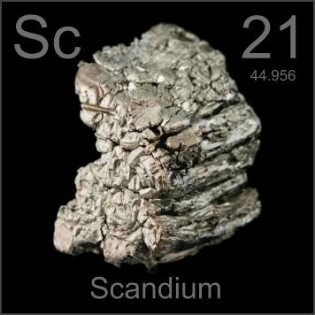

HOME
PREVIOUS
NEXT

Scandium
Atomic Weight: 44.955908
Density: 2.985 g/cm3
Melting Point: 1541 °C
Boiling Point: 2830 °C
These vacuum distilled scandium crystals are destined for use in daylight spectrum metal halide arc lights. A few percent of scandium strengthens aluminum for bicycle frames and baseball bats.